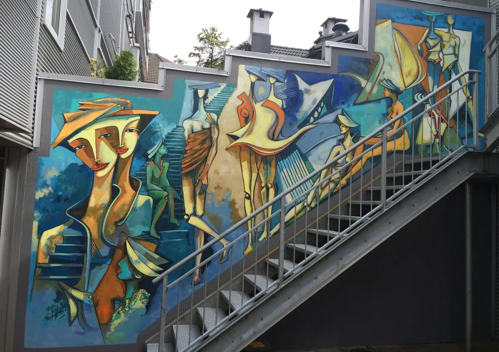
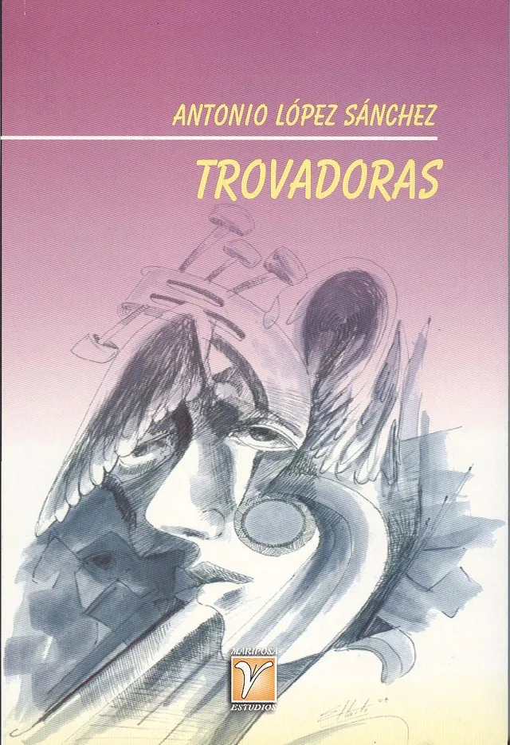
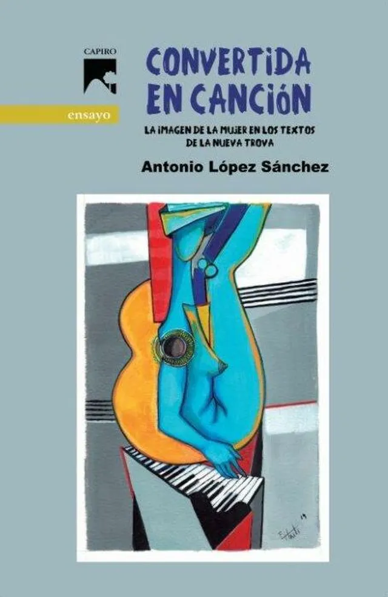
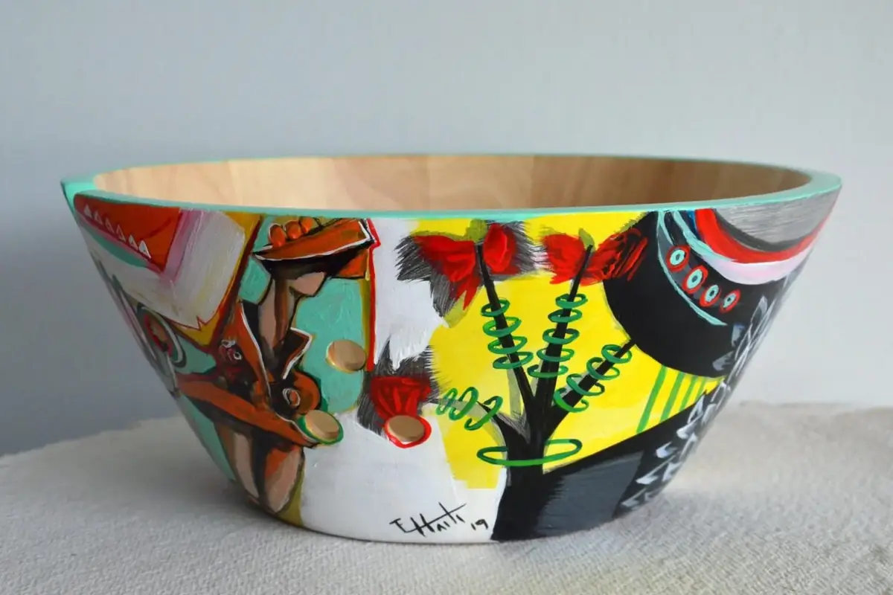
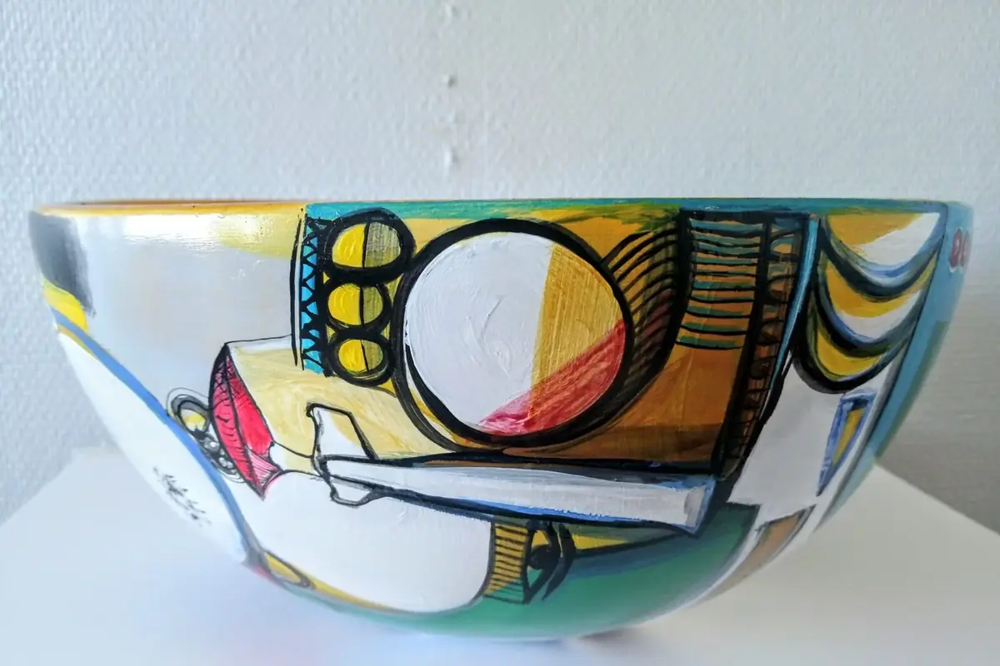
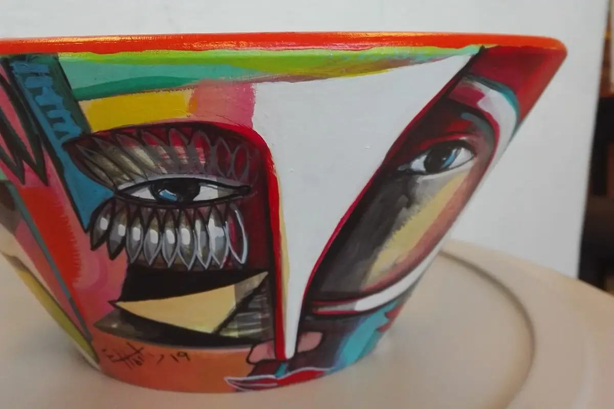
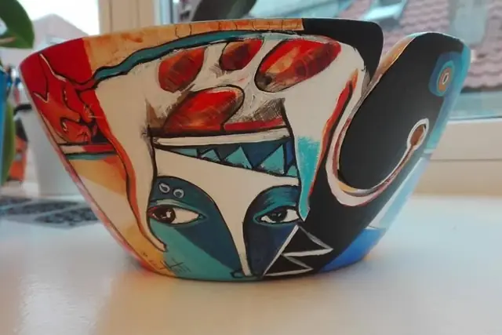

Andre arbeider
Arbeider laget for en vegg, en festival eller en bok: veggmalerier i Bergen og på Vestlandet, Nattjazz-plakaten for 2017, et plateomslag og bokomslag for den kubanske forfatteren Antonio López Sánchez.

Hverdagen Veggmaleri, 8 × 4 m
Bokomslag


Malte boller




Kronologi
- 2021Plateomslag, Tres Músicos
- 2019Omslagsillustrasjon til Convertida en canción av Antonio López Sánchez (Editorial Capiro)
- 2016Festivalplakat, Nattjazz 2017, Bergen
- 2015Veggmaleri Konvergent, borettslaget Vestre Torggaten 12, Bergen
- 2013Veggmaleri, USF, for Nattjazz, Bergen
- 2012Veggmaleri Saxofon, Vågsbunnen, for Nattjazz, Bergen
- 2010Veggmaleri Livets gang, Glesvær
- 2008Veggmaleri La voz, USF, for Nattjazz, Bergen
- 2008Omslagsillustrasjon til Trovadoras av Antonio López Sánchez (Editorial Oriente)